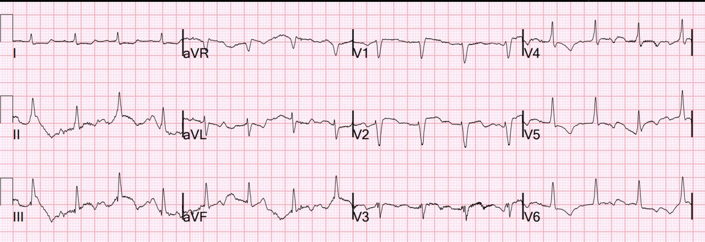
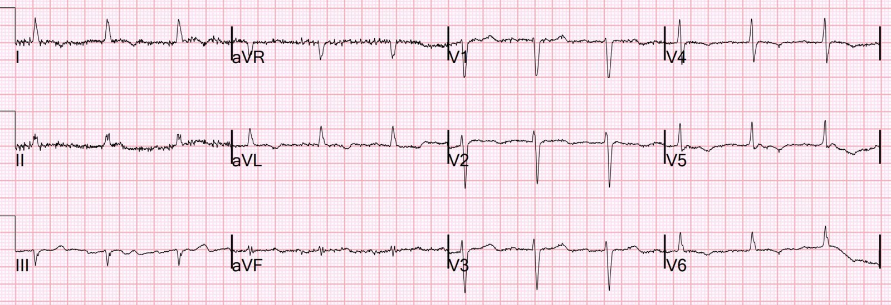
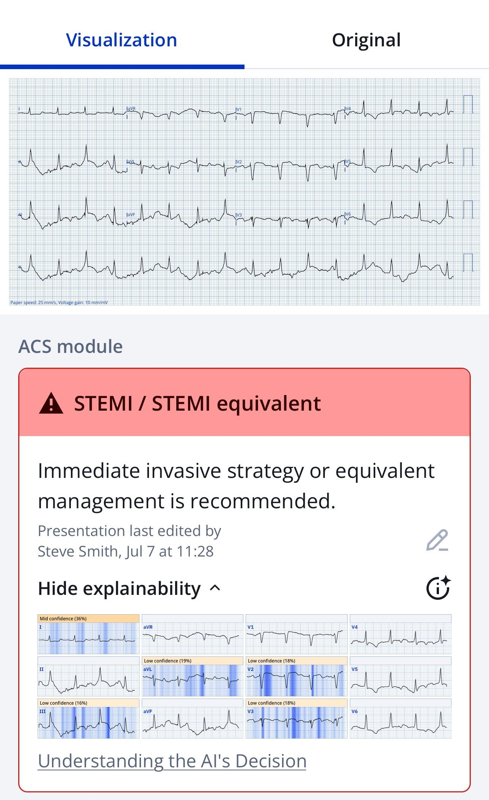
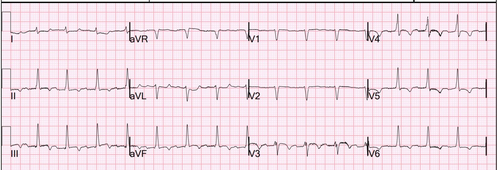
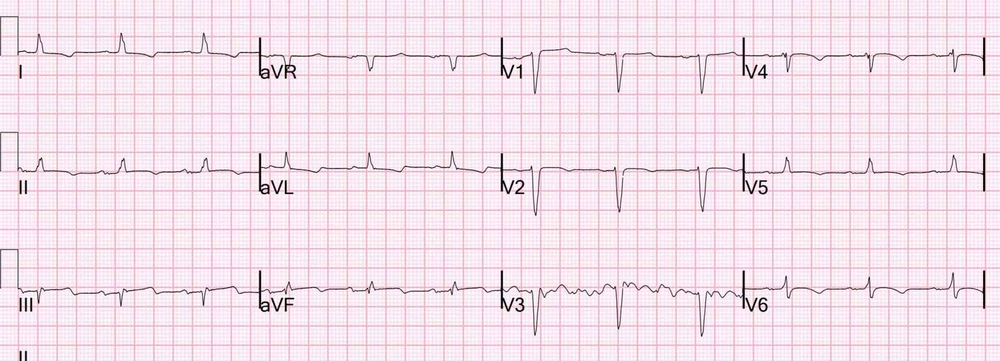
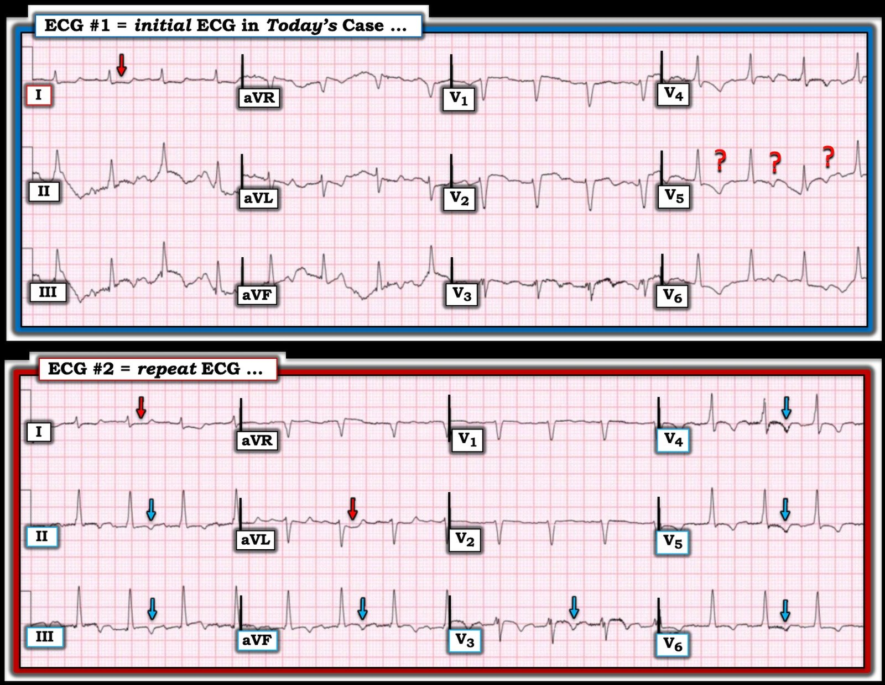

22/08/2025 — Tốt nhất là nhận ra OMI trước khi quyết định không can thiệp
Bản dịch tiếng Việt của bài "It’s best to recognize OMI before deciding not to intervene" – Dr. Smith’s ECG Blog. Giữ nguyên toàn bộ 6 hình ảnh của bản gốc.

Đây là một bệnh nhân nữ cao tuổi có tiền sử suy tim phân suất tống máu giảm (HFrEF) (EF 20%), bệnh thận mạn (CKD), tăng huyết áp, rối loạn lipid máu, xơ gan mất bù, bệnh não gan, tiền sử giãn tĩnh mạch thực quản, và rung nhĩ đáp ứng thất nhanh (A-fib with RVR) đang dùng carvedilol, đái tháo đường típ 2, đến khoa cấp cứu (ED) vì đau họng, đau khắp người, kích động, đau ngực và khó thở. Bệnh nhân khó khai thác bệnh sử và dễ bị kích động.
Điện tâm đồ được chỉ định 24 phút sau khi đến viện và được ghi xong 41 phút sau khi đến viện.


Bạn nghĩ gì?
Đáng tiếc là có nhiều trôi đường nền và nhiễu. Dù vậy, vẫn có thể thấy rõ sóng P ở chuyển đạo I (nhịp xoang tần số 100), chậm dẫn truyền trong thất (IVCD, 120 ms), VÀ ST chênh lên ở các chuyển đạo dưới kèm ST chênh xuống soi gương ở aVL.
Đây là OMI cho tới khi chứng minh được điều ngược lại.
Thậm chí còn có một điện tâm đồ trước đó để so sánh:


Như vậy tất cả các dấu hiệu đều mới xuất hiện, khẳng định OMI cấp. Ở đây QRS chỉ 102 ms.
Mô hình AI Queen of Hearts của PMCardio đồng ý:


Ứng dụng PMcardio for Individuals 3.0 mới nay đã có mô hình Queen of Hearts mới nhất và khả năng giải thích của AI (bản đồ nhiệt màu xanh lam)! Tải ngay cho iOS hoặc Android. https://www.powerfulmedical.com/pmcardio-individuals/ (BS. Smith và BS. Meyers đã huấn luyện mô hình AI này và là cổ đông của Powerful Medical).
Kết quả K trả về 20 phút sau là 6.2 mEq/L. Điều này có lẽ giải thích QRS rộng, nhưng trên điện tâm đồ không có đặc điểm nào khác của tăng kali máu.
Quan trọng hơn, troponin đầu tiên trả về là 3569 ng/L.
Trong bối cảnh đau ngực và khó thở, điều này gần như chẩn đoán nhồi máu cơ tim típ 1 cấp nguy cơ rất cao cần vào phòng thông tim (cath lab) (với bệnh nhân đủ điều kiện). Cùng với các điện tâm đồ, đây là nhồi máu cơ tim do tắc (OMI) cho tới khi chứng minh được điều ngược lại.
Vì vậy một điện tâm đồ khác được ghi 34 phút sau điện tâm đồ đầu tiên:


Điện tâm đồ này chẩn đoán OMI thành dưới (ST chênh lên ở các chuyển đạo dưới kèm ST chênh xuống soi gương ở aVL), có lẽ đã có phần tái tưới máu (vì sóng T ở các chuyển đạo dưới đảo ngược, và sóng T ở aVL dương soi gương.
Chỉ khẳng định tái tưới máu khi mọi triệu chứng đã hết. Nếu còn BẤT KỲ triệu chứng nào, phải coi bệnh nhân đang có OMI ĐANG DIỄN RA dai dẳng (chưa tái tưới máu).
Không rõ triệu chứng ở ngực đã hết hay chưa.
Mô hình AI điện tâm đồ PMCardio cập nhật nhất, có khả năng chẩn đoán cả OMI đang diễn ra lẫn OMI đã tái tưới máu, nhưng chưa được cung cấp cho công chúng, khẳng định với độ tin cậy cao rằng đây vừa là OMI đang diễn ra vừa là OMI đã tái tưới máu.
_______
Trên siêu âm tại giường, EF giảm nặng (10% so với 20% trước đây), và có rối loạn vận động thành khu trú so với vô động ở vùng mỏm. Tĩnh mạch chủ dưới (IVC) căng phồng, gợi ý quá tải thể tích, và có đường B lan tỏa gợi ý phù phổi. X-quang ngực cho thấy bóng tim to và phù phổi. Hemoglobin 8.1 g/dL (mức nền).
Sau khi đã thu thập đủ các thông tin này, nhân viên khoa cấp cứu lo ngại OMI kèm phù phổi mới xuất hiện và chức năng thất trái xấu đi, nên đã gọi khoa tim mạch để trao đổi về bệnh nhân và các dấu hiệu trên điện tâm đồ.
Theo ghi nhận, khoa tim mạch rất nghi ngờ đây là hội chứng vành cấp (ACS). Họ cũng ngần ngại can thiệp vì tiền sử phức tạp của bệnh nhân gồm bệnh não gan, tăng đường huyết và tăng kali máu cùng với bệnh thận mạn.
Vì vậy kế hoạch là tối ưu hóa điều trị nội khoa, sau đó đánh giá lại.
Trong khi được chuyển sang phòng khác, có vẻ là không được gắn monitor, bệnh nhân đột ngột mất đáp ứng và được phát hiện mất mạch. Nhịp ban đầu là vô tâm thu.
Bệnh nhân được hồi sức mà không cần khử rung.
Các bác sĩ cho rằng ngừng tim là do tăng kali máu. Bệnh nhân được điều trị tăng kali máu bằng liệu pháp chuyển kali vào trong tế bào (shifting therapy).
Diễn tiến
Siêu âm tim chính thức: Giảm chức năng tâm thu thất trái, mức độ nặng. Phân suất tống máu thất trái ước tính 10-15% (trước đây 20-25%). Rối loạn vận động thành khu trú: trước bên/dưới bên – vô động. Thành dưới từ giữa đến đáy – vô động. Vách trước vùng mỏm và mỏm, có thể.
Troponin I độ nhạy cao đạt đỉnh trên 60,000 ng/L. Điều này xác lập một OMI cấp rất rộng.
Ghi chú của khoa tim mạch vẫn nghi ngờ hội chứng vành cấp, cho rằng đây có lẽ là một đợt cấp của HFrEF: “Bệnh nhân nhiều khả năng bị đợt cấp suy tim cấp. Chưa rõ nguyên nhân ngừng tim, có thể liên quan đến tăng kali máu/toan máu. Troponin tăng và thay đổi trên điện tâm đồ nhiều khả năng trong bối cảnh mất cân bằng cung-cầu nhưng không thể loại trừ hội chứng vành cấp.”
2 ngày sau, điện tâm đồ này được ghi:


Sóng Q mới ở các chuyển đạo dưới, và OMI rõ ràng (có thể đã tái tưới máu). Kết quả đọc điện tâm đồ này của khoa tim mạch là “ST chênh lên ở các chuyển đạo dưới, không đạt tiêu chuẩn STEMI.” (Nhưng đây rõ ràng là OMI)
Tiêu chuẩn STEMI là vô giá trị!
Đến 5 ngày sau, cuối cùng cũng có sự thừa nhận rằng chụp mạch vành sẽ có chỉ định nếu bệnh nhân có tiên lượng hợp lý:
“Đáng tiếc là tiên lượng của bệnh nhân vẫn xấu. Rối loạn chức năng thất trái nặng, xơ gan mất bù, bệnh thận mạn, nguy cơ chảy máu cao kèm giảm tiểu cầu và tiền sử xuất huyết tiêu hóa tái diễn, khiến đánh giá thiếu máu cục bộ bằng chụp mạch vành và không có giá trị hành động.”
Bệnh nhân chưa bao giờ được chụp mạch vành.
Nếu điều này được nhận ra ngay trên điện tâm đồ đầu tiên, và bệnh nhân được can thiệp mạch vành qua da (PCI) ngay lập tức, liệu bà có sống sót không? Có thể là không, vì bà có rất nhiều bệnh đồng mắc.
Nhưng chúng ta nên đưa ra những quyết định này vì những lý do đúng đắn. Chúng ta phải có khả năng chẩn đoán ngay lập tức, rồi mới quyết định việc can thiệp có phù hợp hay không đối với một bệnh nhân mắc bệnh mạn tính nặng.
Sẽ tốt hơn nếu nói ngay từ đầu: “Đây rõ ràng là một tắc động mạch vành cấp, nhưng sau khi tham vấn gia đình, chúng tôi sẽ không tiến hành can thiệp.”
Bệnh nhân quả thật đã tử vong.
======================================
BÌNH LUẬN CỦA TÔI, bởi KEN GRAUER, MD (22/8/2025):
Tăng kali máu nổi tiếng là có thể biểu hiện theo nhiều cách khác nhau.
- Sách giáo khoa thường mô tả sự xuất hiện tuần tự của sóng T cao, nhọn — QRS giãn rộng — giảm biên độ sóng P — và cuối cùng là hình ảnh QRST dạng sóng hình sin, kết thúc bằng rung thất (VFib) hoặc vô tâm thu.
- Như chúng tôi thường nhấn mạnh, dù một số bệnh nhân có vẻ diễn tiến theo trình tự trên khi xuất hiện các bất thường điện tâm đồ — nhiều bệnh nhân lại không như vậy. Sóng T cao nhọn không phải lúc nào cũng là dấu hiệu điện tâm đồ thứ 1 của tăng kali máu — và một số bệnh nhân (như thấy trong ca hôm nay) có thể bị ngừng tim là biểu hiện thứ 1 của tăng kali máu!
Chính với những suy nghĩ này mà tôi cho rằng đáng để Xem LẠI Một Lần Nữa điện tâm đồ ban đầu của ca hôm nay — và điện tâm đồ ghi lại — vì tăng kali máu đáng kể đã hiện diện tại thời điểm ghi mỗi bản ghi này.
- Tăng kali máu đóng vai trò bao nhiêu trong việc gây ngừng tim ở bệnh nhân này? — so với — thiếu máu cục bộ cấp do nhồi máu cấp? — so với — một sự kết hợp nào đó giữa tăng kali máu & nhồi máu cấp, thì không rõ.
- Điều đã biết — là tôi sẽ không bao giờ nghi ngờ tăng kali máu từ điện tâm đồ #1 hay điện tâm đồ #2 (Xem Hình 1).
========================
Hình 1: So sánh giữa điện tâm đồ ban đầu và điện tâm đồ ghi lại trong ca hôm nay. Tăng kali máu đáng kể hiện diện ở cả hai bản ghi.


Điện tâm đồ Ban đầu trong CA Hôm nay:
Sự hiện diện của nhiễu ở gần như tất cả các chuyển đạo trong điện tâm đồ #1 khiến bản ghi này cực kỳ khó đọc. Gần như chuyển đạo duy nhất trong điện tâm đồ ban đầu này cho thấy hình dạng QRST nhất quán là chuyển đạo I — chuyển đạo này, xét đến kích thước rất nhỏ của phức bộ QRS, biểu hiện ST chênh xuống dạng dẹt đáng lo ngại.
- Bất chấp nhiễu — chúng ta vẫn có thể nói rằng phức bộ QRS trong điện tâm đồ #1 hẹp.
- Việc phát hiện sóng P cực kỳ khó khăn. Tôi tin là có sóng P với khoảng PR hằng định ở chuyển đạo I — nhưng các sóng P này thực sự rất nhỏ ở chuyển đạo I — và không thấy được một cách nhất quán ở bất kỳ chuyển đạo nào khác. Ban đầu tôi nghĩ nhịp là nhịp xoang, với nhiễu là nguyên nhân khiến không nhìn thấy sóng P ở các chuyển đạo khác — nhưng liệu biên độ sóng P giảm có phải là một biểu hiện của tăng kali máu ở bệnh nhân này?
- Đặc biệt khi xét đến ST chênh xuống dạng dẹt bất thường rõ ràng ở chuyển đạo I — chúng ta có thể hình dung ra các thay đổi ST-T do thiếu máu cục bộ ở các chuyển đạo khác — nhưng liệu các phức bộ có đủ nhất quán để loại trừ lệch ST-T do nhiễu? Về mặt lâm sàng — đây là một điện tâm đồ cần được ghi lại để đánh giá thiếu máu cục bộ.
- ĐIỂM THEN CHỐT (PEARL): Tăng kali máu đáng kể nổi tiếng là che lấp các dấu hiệu thiếu máu cục bộ/nhồi máu trên điện tâm đồ. Điều này là vì điện tâm đồ cho chúng ta thấy hiệu ứng tổng hợp (net) của tăng kali máu và bất kỳ tình trạng nào khác có thể đang tác động. Ví dụ — NẾU sóng T lẽ ra nhọn trong bản ghi này do tăng kali máu đáng kể — Điều gì sẽ xảy ra với sóng T nhọn đó nếu thiếu máu cục bộ cấp đang gây ST chênh xuống/sóng T đảo ngược?
Điện tâm đồ Ghi lại:
Dù đã có các biện pháp điều trị — tăng kali máu vẫn còn tại thời điểm ghi điện tâm đồ #2.
- Nhịp vẫn đều — và QRS vẫn hẹp.
- Dựa trên hình dạng hoạt động nhĩ ở chuyển đạo aVL — một lần nữa tôi nghi ngờ nhịp có lẽ là nhịp xoang trong điện tâm đồ #2. Dù vậy — nhiễu đường nền khiến tôi còn lâu mới chắc chắn về nhịp.
- Dù vậy — độ nhất quán chung của các sóng QRST trong điện tâm đồ #2 đã cải thiện đủ, để so với điện tâm đồ #1 — ST chênh xuống dạng dẹt ở các chuyển đạo I,aVL (các mũi tên ĐỎ trong điện tâm đồ #2) — kèm ST dạng vòm (coving) và sóng T đảo ngược đối xứng ở 7 chuyển đạo khác (các mũi tên XANH LAM) gợi ý mạnh mẽ sóng T tái tưới máu (nhưng một lần nữa — đây không phải là điện tâm đồ của một bệnh nhân tăng kali máu đáng kể).
==========================